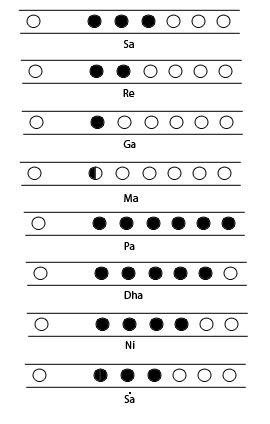

Beginning to Play SaReGaMa on Flute
Before learning Sargam, let us watch a tutorial regarding how to make first sound from our Bansuri. This step needs to be dealt with a lot of patience, since it is not easy to produce sound the very first time you play a flute. Have patience and enjoy the tutorial!
Assuming that you were successful in the attempt of producing the first sound, Let us start playing the Sargam on Bansuri.
Here, I am using C# Bansuri, You can use Bansuri of any scale.The concept of SaReGaMa would be same in every scale of Bansuri

Close the First three Holes of the Flute without any Air Gaps. Blow in the Blowing Hole gently.This is the sur Sa. Using Swar Alap App match the frequency of your Sa.
Now slowly remove one finger from the last covered hole, such that only top two holes remain covered. This is the Sur Re.Match the frequency to see whether you are blowing correctly.
Now remove one more finger such that only the top hole is covered.This is sur Ga. Please cross check with Swar Alap App.
Carefully place your finger on the first hole such that it only partially covers it.This is sur ma. CrossCheck the frequency.
Cover all the holes and blow a little harder to produce sound a pitch up. This is sur Pa.
Remove one finger from the last covered hole, such that only 5 first holes are covered. This is sur Dha.
Uncover one more hole from bottom such that the first 4 holes are covered. This would produce sur Ni.
Uncover the 4th hole such that only first 3 holes are covered. Blow little harder. This would produced sur Sa of the higher octave. Cross check with the Swar Alap App.
Please Note that the Notes played above are all Shuddh Swars. There are Komal and Teevra Swars which would be covered later.
Practise Sargam atleast 100 times before moving on to next step. A strong foundation would yeild perfect results.
After enough practise of Sargam, try practising a few Alankars to grab the base.
Till then happy fluting...